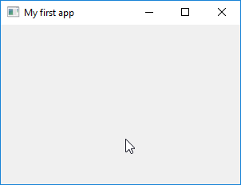

Introduction
Premières étapes pour la création d'une application graphique à l'aide de PyQt5
Importation de PyQt5 et création d'une "fenêtre PyQt5"
Structure d'application PyQT
PyQt5 (https://www.riverbankcomputing.com/software/pyqt/intro) est une boîte à outils de widgets d' interface graphique (en anglais GUI pour Graphical User Interface) combinant le langage de programmation Python et le logiciel Qt5 (https://www.qt.io). PyQt5 est une bibliothèque d'interface graphique populaire qui présente de nombreux avantages par rapport aux autres bibliothèques d'interface graphique telles que Tkinter et wx. Ceux-ci inclus:
Passons directement à l'action et apprenons à créer une fenêtre simple avec PyQt5. Premièrement, nous devrons importer certains modules essentiels à l’exécution d’une interface graphique avec PyQt5. Nous commençons par importer quelques sous-modules de PyQt5.
from PyQt5.QtWidgets import QApplication, QWidget
QtWidgets est l'un des nombreux composants de PyQt5. Certains des plus couramment utilisés sont énumérés ci-dessous:
QtWidgets: Contient des classes qui fournissent un ensemble d'éléments pour créer une interface graphique classique de type bureau.QtCore: Ce module contient les classes principales, y compris la boucle d'événement et les mécanismes signal et slot de Qt.QtGui: Celui-ci contient des classes pour l’intégration du système de fenêtrage, la gestion des événements, les graphiques 2D, les images de base, les polices et le texte.QtDesigner: Ce module contient des classes permettant l'extension de Qt Designer à l'aide de PyQt5.uic: Ce module contient des classes permettant de gérer les fichiers .ui créés par Qt Designer décrivant l’ensemble ou une partie d’une interface graphique.sys car nous voulons accéder aux arguments de ligne de commande. Ceux-ci sont contenus dans la liste `sys.argv
import sys
app = QApplication(sys.argv)
En utilisant les arguments de ligne de commande contenus dans sys.argv, nous devrions créer un objet QApplication. Dans l'exemple ci-dessus, nous avons enregistré cet objet sous le nom app. Ceci est l'objet exécuté lorsque nous exécutons à l'invite de commande la commande python filename.py où filename.py est le fichier dans lequel les instructions sont stockées. Cet objet contiendra tous les éléments de l'interface graphique et leurs méthodes. Par conséquent, lorsque cet objet est créé et exécuté, nous avons accès à toutes les interfaces graphiques utilisées dans le programme. Les éléments de l'interface graphique sont hérités de la classe QWidgets. Nous obtenons donc un objet QWidget comme indiqué ci-dessous.
window = QWidget()
En utilisant les nombreuses méthodes set, nous pouvons définir les valeurs des différents attributs de cet objet window. Nous allons d’abord définir les dimensions de la fenêtre en utilisant la méthode setGeometry. Il prend quatre paramètres: x coordonnée du point le plus à gauche de l'objet (window), y coordonnée du point le plus haut, la largeur et la hauteur de la fenêtre, dans cet ordre. Toutes ces valeurs doivent être des entiers référencés par rapport aux coordonnées d'écran natives. Par exemple, nous pourrions écrire:
window.setGeometry(400, 100, 300, 200)
Cela définirait la fenêtre avec une largeur de 300 pixels et une hauteur de 200 pixels à 400 pixels du côté gauche et à 100 pixels du haut de l'écran natif (écran de votre ordinateur).
Nous pouvons définir un titre pour la fenêtre. Par exemple:
window.setWindowTitle('My first app')
afficherait My first app dans la barre de titre de la fenêtre.
Une fois que nous sommes satisfaits de l'interface graphique que nous avons construite, nous appelons:
window.show()
pour afficher l'objet graphique dans l'application que nous avons créée. Cependant, l'application n'est toujours pas exécutée. Pour exécuter l'application, nous exécutons la commande:
app.exec()
La méthode .show () est une méthode QT qui ouvre la fenêtre à l'écran pour l'utilisateur.
Enfin, pour assurer une fermeture agréable et propre de l'application lorsque nous quittons:
sys.exit(app.exec_())
Le code complet de cette application est donné ci-dessous et le résultat est illustré à la Figure 1. Le code peut être stocké dans un fichier, par exemple myfirstapp.py, puis lorsque vous exécutez la commande python MyFirstApp.py à l'invite de commande (ou dans Spyder), vous obtenez la fenêtre de sortie affichée.
# NOM DU FICHIER: myfirstapp.py
#% IMPORTATION
from PyQt5.QtWidgets import QApplication, QWidget
import sys
# créer un objet QApplication
app = QApplication(sys.argv)
# appeler la classe QWidgets
window = QWidget()
# définir les dimensions de la fenêtre
window.setGeometry(400, 100, 300, 200)
# définir un titre pour la fenêtre
window.setWindowTitle('My first app')
# afficher l'objet graphique dans l'application
window.show()
# fermer l'application
sys.exit(app.exec_())
Figure 1: Une fenêtre PyQt5 créée par le code myfirstapp.py et également par le code myfirstappStructure.py.

QMainWindow (à l'aide de la construction class MainWindow(QMainWindow):). La QMainWindow est une classe Qt qui fournit une fenêtre principale de l’application avec toutes les options (telle que la barre de menus, la barre d’état, etc.).__init __ (). Chaque fois qu'un objet d'une classe est créé, cette méthode sera exécutée. L'initialiseur commence généralement par un appel à l'initialiseur de la classe super (); Ainsi, toutes les méthodes définies dans la classe parent sont immédiatement disponibles, même si elles sont remplacées dans la définition de classe actuelle.if __name__ == "__main __": à la fin pour créer un objet QApplication et l'exécuter.python myfirstappStructure.py (ou exécutez le script sur Spyder), où myfirstappStructure.py est le nom du fichier contenant le code permettant d'afficher la fenêtre illustrée à la Figure 1.
# NOM DU FICHIER: myfirstappStructure.py
#% IMPORTATION
from PyQt5.QtWidgets import QApplication, QMainWindow
class MainWindow(QMainWindow):
'''
DOCUMENTATION
-------------
Créer une fenêtre (300x200 pixels)
'''
def __init__(self):
'''
INITIALISEUR
------------
La classe `MainWindow()` rendre une fenêtre (300x200 pixels)
avec un titre 'My first app'.
'''
super(MainWindow, self).__init__()
# Propriétés de l'interface graphique
self.setGeometry(400, 100, 300, 200)
self.setWindowTitle('My first app')
if __name__ == "__main__":
import sys
app = QApplication(sys.argv)
MyApplication = MainWindow()
MyApplication.show()
sys.exit(app.exec_())